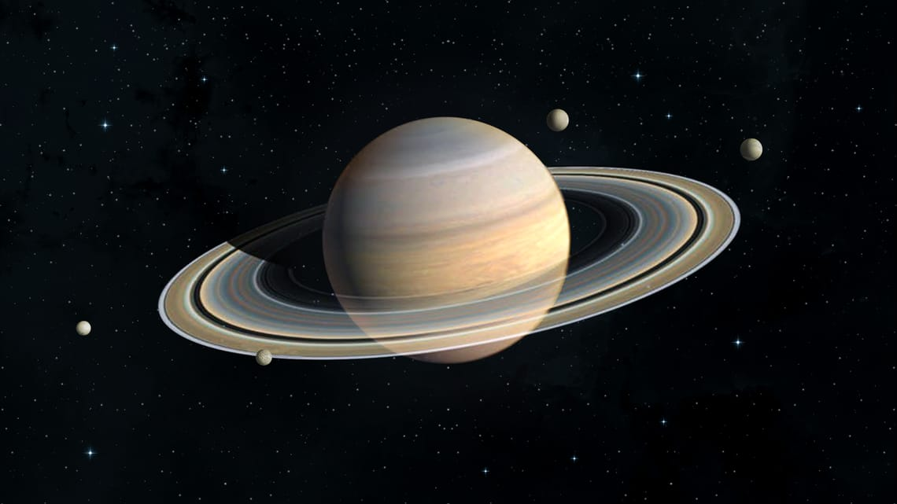
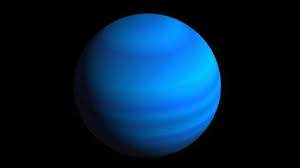

| # | Planet Name | Picture | Distance from the Sun |
|---|---|---|---|
| 1 | Mercury |  |
46,186 million km |
| 2 | Venus | 107,49 million km | |
| 3 | Earth |  |
147,18 million km |
| 4 | Mars |  |
227,91 million km |
| 5 | Jupiter |  |
746,71 million km |
| 6 | Saturn |  | 1,481 billion km |
| 7 | Uranus |  | 2,9494 billion km |
| 8 | Neptune | 4,4747 billion km | |
| 9 | Pluto |  |
5.9 billion km |